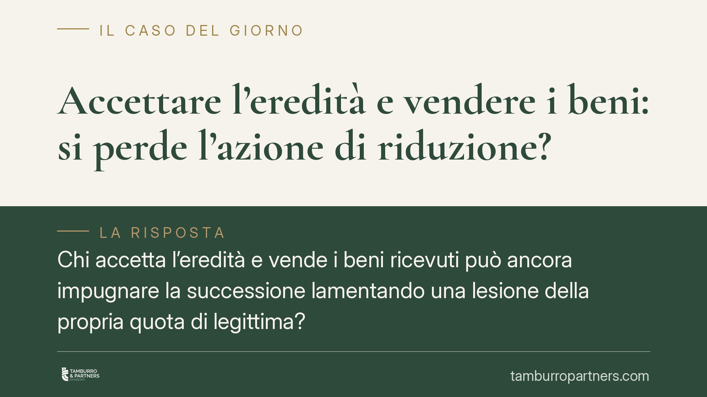

Accettare l'eredità e vendere i beni: si perde l'azione di riduzione?
Chi accetta l'eredità e vende i beni ricevuti può ancora impugnare la successione lamentando una lesione della propria quota di legittima? La risposta dipende da una distinzione tecnica spesso trascurata: quella tra istituzione di erede e legato in sostituzione di legittima. Comprendere questa differenza è decisivo per non compromettere in modo irreversibile i propri diritti successori.

Il problema in sintesi
Un familiare pretermesso o leso nei propri diritti di legittimario riceve dei beni per testamento. Li accetta e, magari a distanza di tempo, ne vende alcuni. Successivamente si accorge che la disposizione testamentaria gli ha attribuito meno di quanto la legge gli riserva. Può ancora agire per ottenere l'integrazione della propria quota?
La questione non ha una risposta unica. Tutto ruota attorno al titolo con cui il bene è stato attribuito e, di conseguenza, agli effetti che la sua vendita produce sulla facoltà di reagire.
Inquadramento normativo
La legittima è la quota di eredità che la legge riserva a determinati stretti congiunti (coniuge, figli, ascendenti) e di cui il defunto non può disporre liberamente. Quando le disposizioni testamentarie o le donazioni ledono questa quota, il legittimario può esperire l'azione di riduzione (artt. 553 e seguenti c.c.), che rende inefficaci, nella misura necessaria, le attribuzioni lesive.
L'art. 564 c.c. subordina l'azione di riduzione, per il legittimario che è anche erede, all'accettazione dell'eredità con beneficio d'inventario (salvo eccezioni). Ma il nodo centrale è un altro: l'art. 551 c.c. disciplina il legato in sostituzione di legittima. Con esso il testatore attribuisce al legittimario un bene o una somma "in luogo" della quota che gli spetterebbe.
In questo caso il legittimario ha una scelta: conseguire il legato, rinunciando così a chiedere la legittima; oppure rinunciare al legato e domandare la legittima con l'azione di riduzione. Non può fare entrambe le cose. L'art. 551 precisa che, se rinuncia al legato, non ha diritto ai supplementi ma può chiedere l'integrazione con la riduzione.
La distinzione decisiva
Occorre distinguere due situazioni.
Istituzione di erede. Se il legittimario è chiamato come erede (anche a titolo particolare su beni determinati, ma nell'ambito di una vocazione ereditaria), l'accettazione e la successiva vendita dei beni non gli precludono di per sé l'azione di riduzione, purché sussistano gli altri presupposti di legge. L'accettazione riguarda l'eredità nel suo complesso; l'eventuale lesione resta contestabile.
Legato in sostituzione di legittima. Qui la logica cambia. La vendita del bene oggetto del legato manifesta in modo inequivoco la volontà di conseguire il legato stesso. Chi dispone del bene lo tratta come proprio, esercitando facoltà che presuppongono l'acquisto definitivo. Questo comportamento è incompatibile con la successiva rinuncia al legato, rinuncia che è invece la condizione necessaria per poter agire in riduzione.
In altre parole: venduto il bene legato in sostituzione, non si può più rinunciare al legato; non potendo rinunciare, si perde l'azione di riduzione. La scelta a favore del legato diventa irreversibile.
Cosa cambia per chi eredita
Le conseguenze pratiche sono rilevanti. Un legittimario che riceva un legato in sostituzione di legittima quantitativamente inferiore alla propria quota, ma che si affretti a vendere il bene, rischia di consolidare un'attribuzione insufficiente senza possibilità di rimedio.
È un errore frequente, perché la differenza tra le due figure non è sempre esplicita nel testamento e richiede un'interpretazione della volontà del testatore. La formula "lascio a Tizio l'immobile X" può celare tanto un legato sostitutivo quanto un'attribuzione a titolo di erede.
Si aggiunga che, in presenza di più coeredi, la stabilità delle attribuzioni incide anche sulle successive operazioni divisionali (art. 735 c.c.) e sulla posizione dei terzi acquirenti dei beni.
Cosa fare in concreto
- Non disporre dei beni ereditari prima di aver qualificato il titolo dell'attribuzione: verificate se si tratta di eredità o di legato in sostituzione di legittima.
- Fate calcolare la quota di legittima e confrontatela con quanto ricevuto, prima di compiere atti dispositivi.
- Valutate la rinuncia al legato entro i termini utili, se l'attribuzione è inferiore alla legittima e intendete agire in riduzione.
- Se siete anche eredi, considerate l'accettazione con beneficio d'inventario, spesso necessaria per l'azione di riduzione.
- Documentate ogni scelta con un professionista: la qualificazione dell'atto di vendita come accettazione tacita (art. 476 c.c.) o come conseguimento del legato produce effetti definitivi.
Disclaimer
Contributo informativo a cura di Tamburro & Partners - Avv. Giuseppe Tamburro. Non costituisce parere legale.
Ogni famiglia ha il suo equilibrio.
Separazione, divorzio, affidamento, assegno: se vuoi un confronto riservato su una specifica situazione, scrivi allo studio. Ti rispondiamo entro un giorno lavorativo.